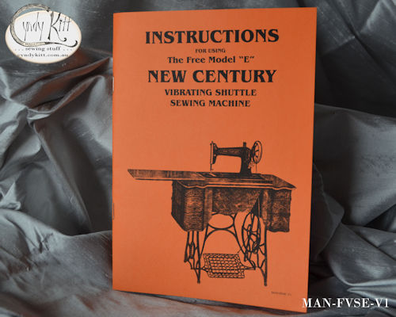
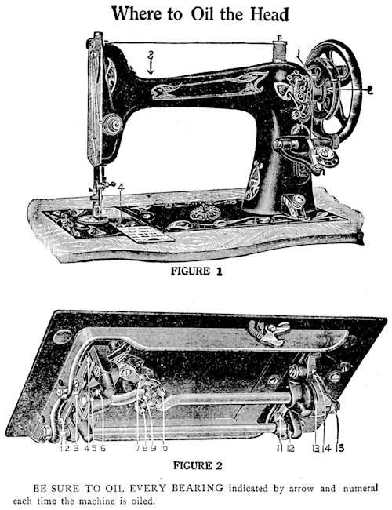

“New Century” was the house brand the Marcus Clark Dept store used for the machines they sold, regardless of make or model, but in the mid 1920s they imported the Free Sewing Machine Company's "Model E" from the USA to sell as their house brand.
Other Australian retailers sold the same model as a "Rollos Rotoscillo", so this manual is also suitable for that brand.


Even though the Model E was a dead end revolution in sewing machine design, it was also without question the quietest and most reliable of any vibrating shuttle (long bobbin) sewing machine; superior to any Singer made, so if you have one, you should give it the appreciation it deserves.
The copy I scanned to create this reproduction was in terrible condition and missing its original cover, but as I also obtained the Marcus Clark store catalogue for the machine I used images and text to help with my reconstruction. I have also not included the pages of part numbers as these are all obsolete and only of interest to the nerdiest of sewing machine nerds.
Please note that I am not selling the original (which has been archived) but a reproduction which has been carefully scanned, digitally repaired and reconstructed.

An excerpt from the store brochure
The Mechanism of the "New Century" Sewing Machine being so much more modern in its construction than any of its competitors renders it absolutely the fastest, lightest running, most easily worked, and the most all-round satisfactory Sewing Machine manufactured.
Some of the Reasons why we claim the "New Century" Sewing Machine is the Best Article of the kind offered to the Public
1. The Mechanism is absolutely the BEST.
Why is the Mechanism the Best?
Because it is the only Sewing Machine made that combines a Rotary Movement with the Vibrating Shuttle. Why is a Rotary Movement the Best? Because with a Rotary Movement you have one piece of mechanism, and only one turn to pick up each stitch; with a vibrating movement there are two pieces of machinery, and two movements to pick up each stitch. Therefore, a Rotary Movement is faster and lasts twice as long as a vibrating movement.
Then why have a Vibrating Shuttle?
Because with a Vibrating Shuttle no cotton is wasted. It is not necessary to have two long cottons at the back of the needle when working.
2. There is no hook in the construction of a Vibrating Shuttle.
Therefore, it is impossible for the cotton to catch underneath, pulling the work through the needle plate hole. Anyone who has operated a Rotary Machine with a Rotary Shuttle Movement knows how often fine work is ruined by being pulled down into the race. This never occurs with the "New Century" Combined Rotary Vibrator Machine.
3. The "New Century" Rotary Vibrator has a Rotary upper main shaft in the arm, a Rotary lower shaft under the bed, and connecting these two Rotary shafts a main connection that rotates at both ends.
4. The "New Century" Machine has the shortest needle bar made. This enables you to do very heavy work, much heavier than is usually done on a family Sewing Machine
5. The "New Century" Machine has the largest arm. Anyone who has ever worked a Sewing Machine knows the advantage of a high arm. It also has double ball hearings in the stand and a steel ball bearing pitman.
6. Self releasing disc tension.
7. Automatic Lift, head comes up as you raise machine, belt being always in position.
We especially desire to draw attention to the fact that with the New Century Sewing Machine operators can do Chifon, Georgette, and all the delicate fabrics so much in vogue, without any puckering of goods.
On the New Century 6 or 8 thicknesses of Moleskin can be sewn with ease, and operator can negotiate the heaviest of seams without raising foot.
We know the New Century Machine is the best Sewing Machine manufactured, and we are always pleased to prove by practical demonstration this statement to you.
The 36 page reproduction booklet (40 pages including cover) is A5 size (the original was 138mm × 205mm)
No copyright is to be inferred by these reproduction manuals, I only produced it to assist fellow vintage sewing machine enthusiasts and seek only to be compensated a little for the time spent digitally reconstructing and the expense of printing.